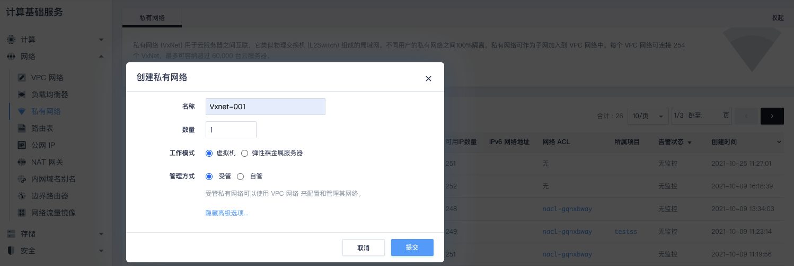
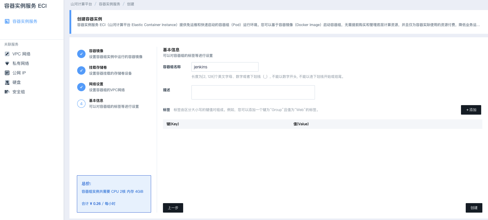

使用 ECI 搭建一个 Jenkins 服务器
项目概览
在本项目中，您将了解如何使用容器实例服务 ECI 部署一个 Jenkins 服务器。 Jenkins 是一个开源的、提供友好操作界面的持续集成工具，主要用于持续、自动的构建/测试软件项目、监控外部任务的运行。
准备事项
账号：您需要注册一个账户并充值以购买资源。
技能水平：基本了解 Jenkins 服务器的配置和使用。
前期小知识
Jenkins 的前身是 Hudson 是一个可扩展的持续集成引擎。Jenkins 是一款开源 CI&CD 软件，用于自动化各种任务，包括构建、测试和部署软件。Jenkins 支持各种运行方式，可通过系统包、容器或者通过一个独立的 Java 程序运行。
主要特色功能：
- 流水线
- 多种类型的计算节点支持（ SSH 、 JNLP 等）
- 丰富的插件扩展机制
具体操作
借助亿栖云平台，可以方便地将容器实例服务部署在私有网络当中。
在控制台的产品与服务下拉菜单中选择容器服务中的容器实例服务 ECI 。
在弹性容器界面中，可以很方便地看到 ECI 的关联资源，右边展示的是 ECI 的实例列表。
1. 创建 EIP
对于 ECI 实例中指定的镜像地址为公网地址或者实例本身需要通过公网对外暴露服务以及实例内部需要通过公网访问外部资源的情况，需要事先在云平台中申请一个 EIP。在弹性容器页面中选择关联服务中的公网 IP， 进入 EIP 的服务页面。
点击申请，创建出指定规格的 EIP。
2. 创建安全组
回到之前的容器实例服务页面中，在关联服务中选择安全组，进入安全组的服务页面。
点击创建，指定安全组名称并确认以后，跳转到安全组的详情页。由于Jenkins服务对外需要暴露 8080 和 9000 端口，这里需要添加相关规则并应用安全组。
3. 创建私有网络
再次回到容器实例服务页面中，点击关联服务中的私有网络，进入私有网络服务页面。
点击创建，进入私有网络创建页面。
创建一个受管私有网络。

4. 创建 VPC 网络
切回容器实例服务页面中，点击关联服务中的 VPC 网络， 进入VPC 网络服务页面。
点击创建 VPC 网络进入 VPC 网络创建页面。
选择之前创建的安全组并点击创建。
进入 VPC 网络详情页，进入图形化页面，绑定 EIP ，加入上面创建的私有网络，点击应用修改。
5. 创建Jenkins容器服务
在容器实例服务页面中，点击创建。
在容器实例服务创建页面中指定容器镜像。
点击下一步。
如果需要挂载外部硬盘，可以在卷挂载页面指定，这里直接点击下一步。
指定上面创建的私有网络。
指定容器组的基本信息并创建。

待容器组创建完成，从容器组列表中查看容器组私有网段 IP 。
6. 设置 VPC 网络的端口转发规则
切换到之前的 VPC 网络详情页，点击管理配置，添加端口转发规则，最后应用修改。
7. 查看Jenkins相关日志并获取管理员初始密码
切换到容器实例服务详情页，点击日志查看管理员初始密码。
8. 外网访问并解锁 Jenkins
因为上面已经设置好了相应的端口转发规则，这里可以通过 EIP + 8080 端口的方式直接访问Jenkins。